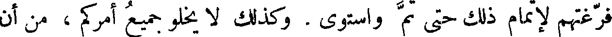
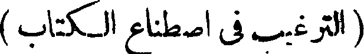
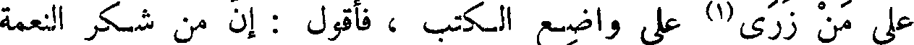
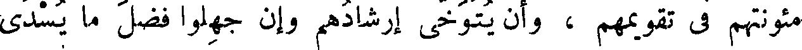
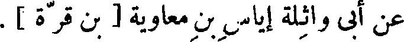
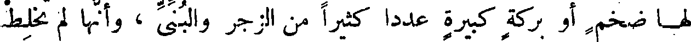
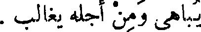

File: 000502.gt.txt (if the image is defective, simply delete all Arabic text and the line will be excluded)

وتخطئهم على قدر ما عرفت ، حتى شدوا من معرفة ذلك ما شدوا، ثم إنها
File: 000503.gt.txt (if the image is defective, simply delete all Arabic text and the line will be excluded)

فرغتهم لإتمام ذلك حتى تم واستوى . وكذلك لا يخلو جميع أمركم ، من أن
File: 000504.gt.txt (if the image is defective, simply delete all Arabic text and the line will be excluded)

يكون اتفاقا ، أو اتباع أثر .
File: 000505.gt.txt (if the image is defective, simply delete all Arabic text and the line will be excluded)

( الترغيب في اصطناع الكتاب )
File: 000506.gt.txt (if the image is defective, simply delete all Arabic text and the line will be excluded)

ثم رجع بنا القول إلى الترغيب في اصطناع الكتاب ، والاحتجاج
File: 000507.gt.txt (if the image is defective, simply delete all Arabic text and the line will be excluded)

على من زرى (1) على واضع الكتب ، فأقول : إن من شكر النعمة
File: 000508.gt.txt (if the image is defective, simply delete all Arabic text and the line will be excluded)

في معرفة مغاوي الناس ومراشدهم ، ومضارهم ومنافعهم ، أن يحتمل ثقل
File: 000509.gt.txt (if the image is defective, simply delete all Arabic text and the line will be excluded)

مؤونتهم في تقويمهم ، وأن يتوخى إرشادهم وإن جهلوا فضل ما يسدى
File: 000510.gt.txt (if the image is defective, simply delete all Arabic text and the line will be excluded)

إليهم ؛ فلن يصان العلم بمثل بذله ، ولن تستبقى النعمة فيه بمثل نشره .
File: 000511.gt.txt (if the image is defective, simply delete all Arabic text and the line will be excluded)

على أن قراءة الكتب أبلغ في إرشادهم من تلاقيهم ؛ إذ كان مع التلاقي
File: 000512.gt.txt (if the image is defective, simply delete all Arabic text and the line will be excluded)

يشتد التصنع ، ويكثر التظالم ، وتفرط العصبية ، وتقوى الحمية ؛ وعند
File: 000513.gt.txt (if the image is defective, simply delete all Arabic text and the line will be excluded)

المواجهة والمقابلة ، يشتد حب الغلبة ، وشهوة المباهاة والرياسة ، مع
File: 000514.gt.txt (if the image is defective, simply delete all Arabic text and the line will be excluded)

الاستحياء من الرجوع ، والأنفة من الخضوع ؛ وعن جميع ذلك تحدث
File: 000515.gt.txt (if the image is defective, simply delete all Arabic text and the line will be excluded)

الضغائن ، ويظهر التباين . وإذا كانت القلوب على هذه الصفة وعلى هذه
File: 000516.gt.txt (if the image is defective, simply delete all Arabic text and the line will be excluded)

( مما زعموا في الخلق المركب )
File: 000517.gt.txt (if the image is defective, simply delete all Arabic text and the line will be excluded)

وقالوا في الخلق المركب ضروبا من الحق والباطل ، ومن الصدق
File: 000518.gt.txt (if the image is defective, simply delete all Arabic text and the line will be excluded)
والكذب . فمن الباطل زعمهم أن الشبوط ولد الزجر(2) من البني ، وأن
File: 000519.gt.txt (if the image is defective, simply delete all Arabic text and the line will be excluded)

الشبوط لا يخلق من الشبوط،وأنه كالبغل في(3) تركيبه وإنساله . ورووا ذلك
File: 000520.gt.txt (if the image is defective, simply delete all Arabic text and the line will be excluded)

عن أبي واثلة إياس بن معاوية [ بن قرة ] .
File: 000521.gt.txt (if the image is defective, simply delete all Arabic text and the line will be excluded)

وزعموا أن أم جعفر بنت جعفر بن المنصور ، حصرت(4) في حوض
File: 000522.gt.txt (if the image is defective, simply delete all Arabic text and the line will be excluded)

لها ضخم أو بركة كبيرة عددا كثيرا من الزجر والبني ، وأنها لم تخلط
File: 000523.gt.txt (if the image is defective, simply delete all Arabic text and the line will be excluded)

بهما غيرهما ، فمات أكثره وبقيت بقية كانت الصميم في القوة ، وفي
File: 000524.gt.txt (if the image is defective, simply delete all Arabic text and the line will be excluded)

احتمال تغير المكان فلم تحمل البيض حينا ، ثم إنها(5) حملت بالشبابيط .
File: 000525.gt.txt (if the image is defective, simply delete all Arabic text and the line will be excluded)

( مطر الضفادع والشبابيط )
File: 000526.gt.txt (if the image is defective, simply delete all Arabic text and the line will be excluded)

وزعم حريث أنه كان بأيذج(6) ، فإذا سحابة دهماء طخياء(7) تكاد
File: 000527.gt.txt (if the image is defective, simply delete all Arabic text and the line will be excluded)

تمس الأرض ، وتكاد تمس قمم رءوسهم ، وأنهم سمعوا فيها كأصوات
File: 000528.gt.txt (if the image is defective, simply delete all Arabic text and the line will be excluded)

المجانيق(8) ، وكهدير الفحول في الأشوال ؛ ثم إنها دفعت بأشد مطر رئي
File: 000529.gt.txt (if the image is defective, simply delete all Arabic text and the line will be excluded)

أو سمع به ، حتى استسلموا للغرق ؛ ثم اندفعت بالضفادع العظام(9) ، ثم
File: 000530.gt.txt (if the image is defective, simply delete all Arabic text and the line will be excluded)

وكلما عظمت الحشفة انبسط ذلك البياض على قدر الزيادة فيها ،
File: 000531.gt.txt (if the image is defective, simply delete all Arabic text and the line will be excluded)

وإنما ذلك كالبياض الذي يعرض من حرق النار وتشييطها(1) ، وكالذي
File: 000532.gt.txt (if the image is defective, simply delete all Arabic text and the line will be excluded)

يعرض للصقالبة من التعالج بالكي . وربما اشتد بياضه حتى يفحش
File: 000533.gt.txt (if the image is defective, simply delete all Arabic text and the line will be excluded)

ويرديه(2) ، إلا أنه لا يفشو ولا ينتشر ، إلا بقدر ما ينبسط مكانه ، ويتحول
File: 000534.gt.txt (if the image is defective, simply delete all Arabic text and the line will be excluded)

صاحبه رجلا ، بعد أن كان صبيا(3) . وليس كالذي يعرض من البلغم ومن
File: 000535.gt.txt (if the image is defective, simply delete all Arabic text and the line will be excluded)

المرة . وبعض البرص يذهب حتى كأنه لم يكن ، وبعضه لا يذهب
File: 000536.gt.txt (if the image is defective, simply delete all Arabic text and the line will be excluded)

ولا يقف ، بل لا يزال يتفشى ويتسع حتى ربما سلخه ، ولا يذهب إلا بأن
File: 000537.gt.txt (if the image is defective, simply delete all Arabic text and the line will be excluded)

يذهب به نبي(4) ، فيكون ذلك علامة له . ومن البهق الأبيض ما يكاد يلحق
File: 000538.gt.txt (if the image is defective, simply delete all Arabic text and the line will be excluded)

بالبرص(5) ، ولكن الذي هون أمره الذي ترون من كثرة برء الناس منه .
File: 000539.gt.txt (if the image is defective, simply delete all Arabic text and the line will be excluded)

55 ثم الخصاء يكون على ضروب ، ويكون في ضروب ، فمن ذلك
File: 000540.gt.txt (if the image is defective, simply delete all Arabic text and the line will be excluded)

ما يعرض بعد الكبر للأحرار ، كما يعرض للعبيد ، وللعرب كما يعرض
File: 000541.gt.txt (if the image is defective, simply delete all Arabic text and the line will be excluded)

للعجم ، كما خصى بعض عباهلة اليمن(6) علقمة بن سهل الخصي .
File: 000542.gt.txt (if the image is defective, simply delete all Arabic text and the line will be excluded)
( علقمة الفحل وعلقمة الخصي )
File: 000543.gt.txt (if the image is defective, simply delete all Arabic text and the line will be excluded)

وإنما قيل لعلقمة بن عبدة الفحل ، حين وقع على هذا اسم الخصي .
File: 000544.gt.txt (if the image is defective, simply delete all Arabic text and the line will be excluded)

الهيئة ، امتنعت من التعرف ، وعميت عن مواضع الدلالة ، وليست في
File: 000545.gt.txt (if the image is defective, simply delete all Arabic text and the line will be excluded)
في الكتب علة تمنع من درك البغية ، وإصابة الحجة ؛ لأن المتوحد بدرسها(1) ،
File: 000546.gt.txt (if the image is defective, simply delete all Arabic text and the line will be excluded)

والمنفرد بفهم معانيها ، لا يباهي نفسه ولا يغالب عقله ، وقد عدم من له
File: 000547.gt.txt (if the image is defective, simply delete all Arabic text and the line will be excluded)

يباهي ومن أجله يغالب .
File: 000548.gt.txt (if the image is defective, simply delete all Arabic text and the line will be excluded)

(الكتاب قد يفضل صاحبه )
File: 000549.gt.txt (if the image is defective, simply delete all Arabic text and the line will be excluded)
والكتاب قد يفضل صاحبه ، ويتقدم مؤلفه ، ويرجح قلمه على لسانه
File: 000550.gt.txt (if the image is defective, simply delete all Arabic text and the line will be excluded)

بأمور : منها أن الكتاب يقرأ بكل مكان ، ويظهر ما فيه على كل لسان ،
File: 000551.gt.txt (if the image is defective, simply delete all Arabic text and the line will be excluded)

ويوجد مع كل زمان ، على تفاوت ما بين الأعصار ، وتباعد ما بين